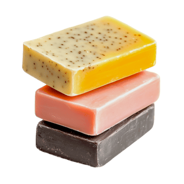

Sillage · Le savon du quotidien
Notre savon
est 100% français !
Le savon artisanal Sillage est sans huile de palme, sans colorants synthétiques et sans alcool
Découvrir le produit
Sillage · Le savon du quotidien
Le savon artisanal Sillage est sans huile de palme, sans colorants synthétiques et sans alcool
Découvrir le produit